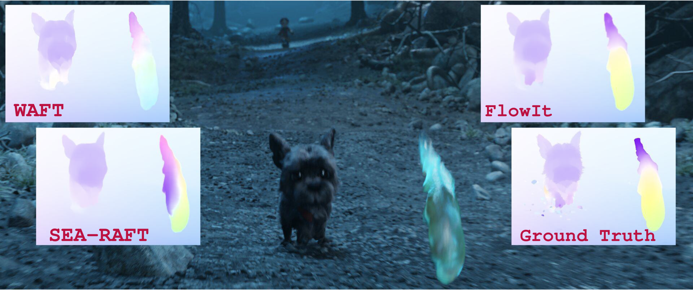
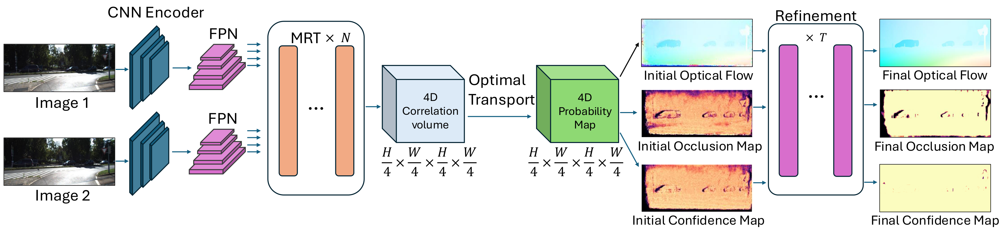
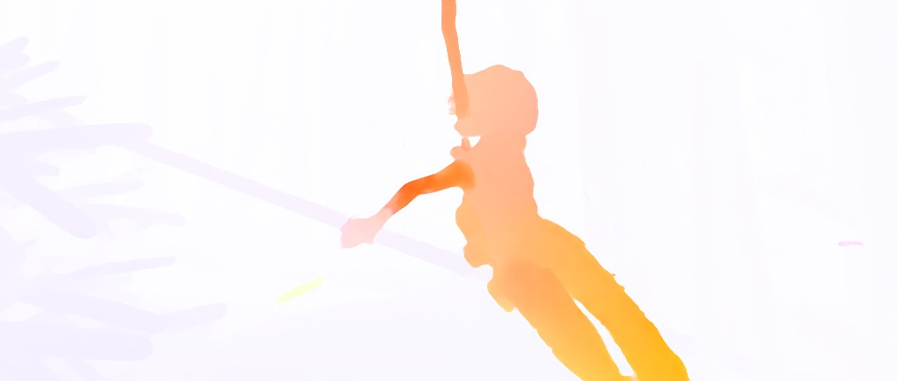

We present FlowIt, a novel architecture for optical flow estimation that combines global matching with confidence and occlusion-guided refinement. At its core, FlowIt leverages a hierarchical transformer architecture that captures extensive global context, enabling the model to effectively model long-range correspondences. To overcome the limitations of localized matching, we formulate the flow initialization as an optimal transport problem. This formulation yields a highly robust initial flow field, alongside explicitly derived occlusion and confidence maps. These cues are then seamlessly integrated into a guided refinement stage, where the network actively propagates reliable motion estimates from high-confidence regions into ambiguous, low-confidence areas.

FlowIt extracts multi-scale features from images using a CNN encoder followed by a Feature Pyramid Network (FPN). These features are processed with one or more Multi-Resolution Transformer (MRT) blocks. A 4D correlation volume is constructed using the $\frac{1}{4}$ resolution features, and optimal transport is applied to produce a 4D probability map. Initial flow, occlusion, and confidence maps are derived using the probability map. These predictions are refined through three refinement iterations to obtain the final outputs.
We compare FlowSeek, SEA-RAFT, WAFT, and our method on several scenes in a zero-shot setting.

@article{safadoust2026flowit,
title={FlowIt: Global Matching via Hierarchical Transformers and Optimal Transport for Optical Flow},
author={Safadoust, Sadra and Tosi, Fabio and Poggi, Matteo and G{\"u}ney, Fatma},
journal={arXiv preprint arXiv:2603.28759},
year={2026}
}